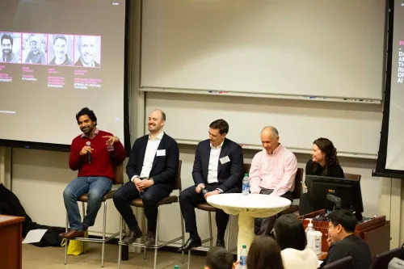
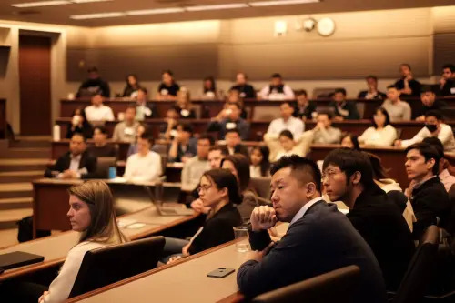
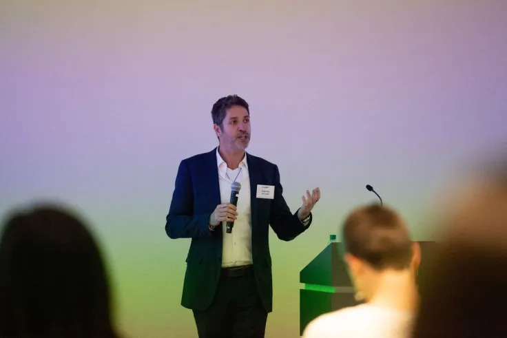

History
TechCon, originally part of the UK Radio Festival organized by The Radio Academy, has evolved
significantly
over the years. Since 2016, it has been independently run by TBC Media Ltd., focusing on supporting the
UK
radio and audio industry1. The conference has grown to become a key event for broadcast engineers,
technologists, and anyone interested in radio, audio, and technology. It features a mix of technical
sessions, masterclasses, and real-life project case studies, making it a valuable platform for learning
and
networking2. TechCon continues to adapt and expand, reflecting the dynamic nature of the industry it
serves

Mission
This premier technology and innovation conference will showcase over 200 student presentations and
posters, providing a platform for young researchers to display their groundbreaking work. Attendees will
have the opportunity to network with industry professionals, explore cutting-edge advancements in the
field, and participate in discussions that shape the future of semiconductor technology. TechCon 2024
promises to be an inspiring and transformative event for students, researchers, and tech enthusiasts
alike.

Past Speakers
Eitan Shay
Eitan Shay is a seasoned digital health product leader who recently joined DarioHealth as Chief
Product Officer. With a wealth of experience in the digital health industry, Eitan has previously
held product leadership roles at notable companies such as Livongo, Teladoc Health, and Meta
Platforms2. His expertise lies in creating high-growth commercial product environments and driving
consumer engagement through technology. Eitan's appointment is expected to bolster DarioHealth's
efforts to scale its digital therapeutics platform and enhance its user experience

Kevin Lee
Kevin Lee is a prominent speaker at TechCon 2024. He is a PhD and ML expert who will be leading a
workshop titled "Introduction to Language Models for Business Leaders". In this workshop, Kevin will
provide insights into how language models work and how businesses can effectively leverage them2.
His expertise in AI and machine learning makes him a valuable resource for attendees looking to
understand and implement generative AI in their operations